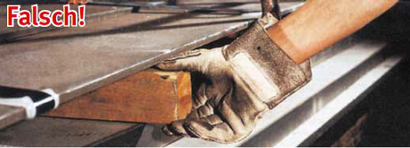
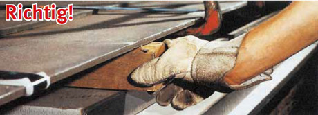
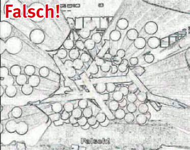

Der Anschläger darf das Zeichen zum Absenken der Last erst dann geben, wenn alle Personen aus dem Gefahrenbereich der Abladestelle herausgetreten sind.
Immer wieder wurden Unfälle dadurch verursacht, dass Anschläger oder Führer von flur- oder drahtlos gesteuerten Kranen von der niedergehenden Last erfasst und erdrückt worden sind, weil sie noch schnell ein Unterlegholz zurechtrücken oder andere Arbeiten auf der Ablagefläche verrichten wollten.
Müssen Lasten während des Transportes geführt oder im Kranhaken gedreht werden, so sind Leitseile oder Ziehhaken zu verwenden.
Wird eine Last beim Absetzen von Hand in Bewegung gesetzt um sie zu drehen, darf man sich nie zwischen der bewegten Last und festen Teilen aufhalten. Denn auch in einer von Hand in Bewegung gebrachten Last steckt so viel Energie, dass die Last nicht auf der Stelle durch Körperkraft abgestoppt werden kann.
Beim Absetzen von Lasten ist darauf zu achten, dass die richtigen Unterlagen bereitliegen und die Handhabung so erfolgt, dass keine Quetschgefährdungen durch das Herabsetzen der Last bestehen (Bilder 20-1 und 20-2).

Bild 20-1: Unterlagen dürfen so nicht angefasst werden. Es besteht die Möglichkeit der Fingerquetschung

Bild 20-2: So wird ein Unterlegholz richtig angefasst. Die Finger sind nicht gefährdet
Rundes Material ist gegen Abrollen zu sichern. Der Faserverlauf der Unterlegkeile ist zu beachten.
Beim Lagern in Hürden oder zwischen Rungen darf nicht über deren Spitze hinaus abgesetzt werden (Bild 20-3).

Bild 20-3: Die Anschläger, die diese Last abgesetzt haben, haben nicht daran gedacht, dass das Material auch wieder mit dem Kran aufgenommen werden muss